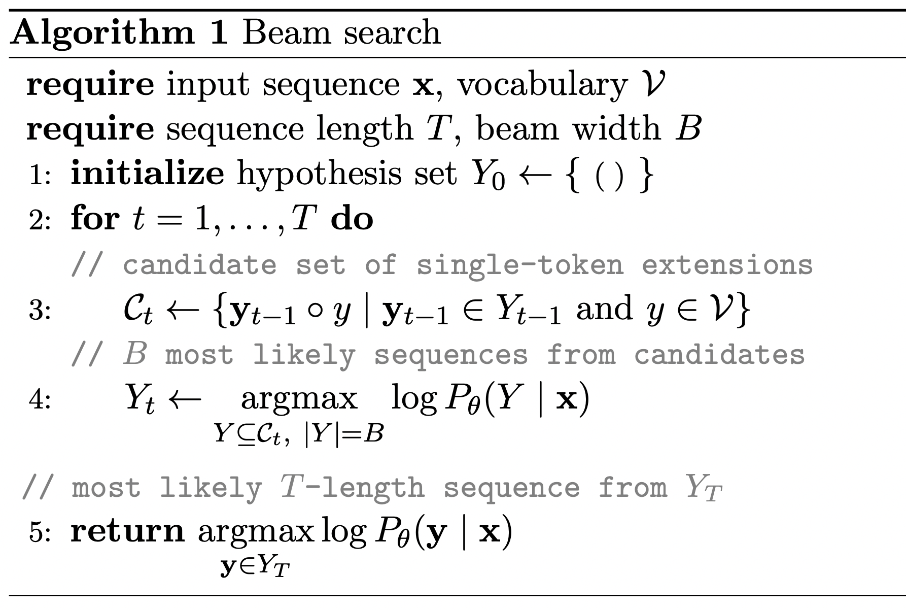

Beam Search Description

Description.
Beam search is a pruned breadth-first search algorithm.
At each step $t$, beam search constructs a candidate set $\mathcal{C}_t$ consisting of all combinations of length $t-1$ sequences from the previous hypothesis set $Y_{t-1}$ and a single new token $y$ from vocabulary $\mathcal{V}$.
The $B$ ("beam width") most likely sequences from the candidate set define the updated hypothesis set $Y_t$.
We use a
beam width of $\boldsymbol{B=256}$. The
size of the vocabulary $\boldsymbol{\mathcal{V}}$ is 100, corresponding to the number of bins used in the
discretization procedure.$^1$
Notation
Following the presentation in
Meister et al., 2020, we have overloaded $\log P_\theta(\cdot \mid \mathbf{x})$ to define the likelihood of a set of sequences in addition to that of a single sequence: $\log P_\theta(Y \mid \mathbf{x}) = \sum_{\mathbf{y} \in Y} \log P_\theta(\mathbf{y} \mid \mathbf{x})$.
We use $\small{(\;)}$ to denote the empty (0 length) sequence and $\circ$ to represent the concatenation operation.
Planning with beam search.
Algorithm 1 is presented in an abstracted form so as to apply to a generic sequence generation problem.
To use beam search for control, we use the last $c$ transitions (the "context size") of the current trajectory as the input $\mathbf{x}$, corresponding to the most recent $c \cdot (N + M + 2)$ tokens.$^2$
Similarly, when evaluating the likelihood of a generated sequence $\mathbf{y}$, only the most recent $c$ transitions of the sequence are passed as input to the model $P_\theta$.
We use a
context size of $\boldsymbol{c=5}$.
We use a
planning horizon of $10$ transitions, corresponding to a generated
sequence length of $\boldsymbol{T=10 \cdot (N + M + 2)}$ tokens.
For example, in the Hopper benchmark, $T = 10 \cdot (11 + 3 + 2) = 160$.
$^1$Because the beam width is larger than the vocabulary size, at $t=1$ of Algorithm 1 we can fit all single tokens in the hypothesis set $Y_1$. At $t=2$, when there are $100^2$ options, we must begin pruning.
To account for this edge case, the size constraint in line 4,
$|Y| = B$,
could be more precisely rewritten as
$|Y| = \min(B, |Y_{t-1}| * | \mathcal{V} |)$, but we present the simpler version in the pseudocode description for conceptual clarity.
$^2$$N+M+2$ accounts for $N$-dimensional states, $M$-dimensional actions, and scalar rewards and rewards-to-go.